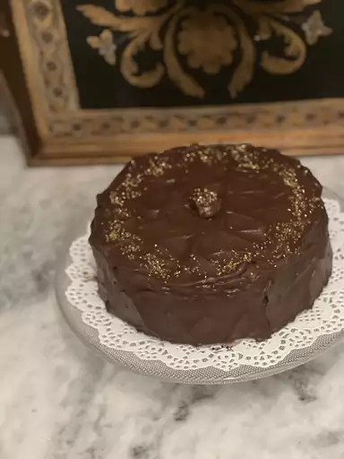

Hersheys Cake

Description
The iconic chocolate cake recipe was shared on Allrecipes more than 20
years ago, and has since earned almost 3,000 rave reviews and ratings.
It's not hard to see why it's beloved by the Allrecipes community:
Hershey's chocolate cake is incredibly indulgent, yet incredibly easy to
make with basic ingredients. Try it today to see what all the fuss is
about!
Ingredients
-
Sugar Two cups of white sugar add the perfect amount of sweetness, while
locking in the moisture from the other ingredients.
-
Flour All-purpose flour provides structure, acts as a thickening agent,
and helps build the fluffy texture.
-
Cocoa Powder Of course, you'll want to use Hershey's brand unsweetened
cocoa powder for this one. It adds the rich, indulgent flavor you know
and love.
-
Leaveners Baking powder and baking soda act as leaveners, which means
they cause the batter to expand and give the cake a perfect rise.
-
Salt Just a teaspoon of salt is all you'll need to add complexity and
highlight the other flavors. It might not seem like a lot, but you'll
definitely miss the salt if you skip it.
-
Eggs Whole eggs affect the cake in a number of ways: They provide
structure, add moisture, lend flavor, and contribute to a tender
texture.
-
Milk Whole milk adds moisture and helps the batter come together
smoothly.
- Oil Vegetable oil ensures your cake will never be dry.
-
Vanilla Two teaspoons of vanilla extract add complex flavor and bring
out the flavors of the other ingredients, such as the cocoa powder.
-
Boiling Water You might be wondering why this recipe calls for a cup of
boiling water. It intensifies the chocolatey flavor, contributes to the
fluffy texture, and reacts with the leaveners to create an even higher
rise.
instructions
-
Make the Batter Stir together the dry ingredients in a mixing bowl. Add
the wet ingredients and beat with an electric mixer for about three
minutes. Stir in the boiling water by hand.
-
Bake the Cake Pour the batter into two prepared cake pans. Bake in a
preheated oven until a toothpick inserted in the center comes out clean.
Let the cakes cool slightly before removing from the pans.
-
Frost the Cake While the cake finishes cooling to room temperature, make
the frosting: Cream the butter, stir in the cocoa and confectioners'
sugar alternately with the milk and vanilla, and beat until it's smooth
and spreadable.